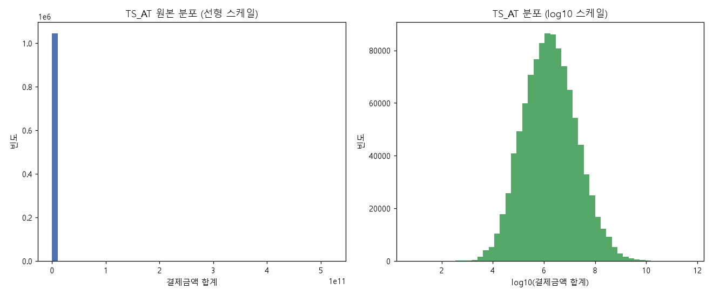
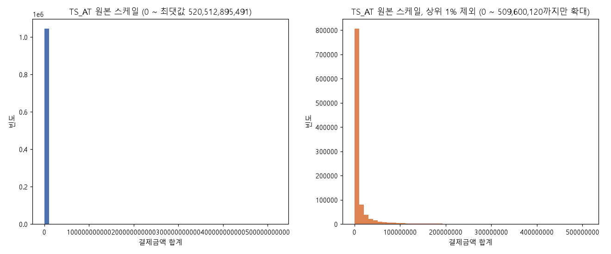
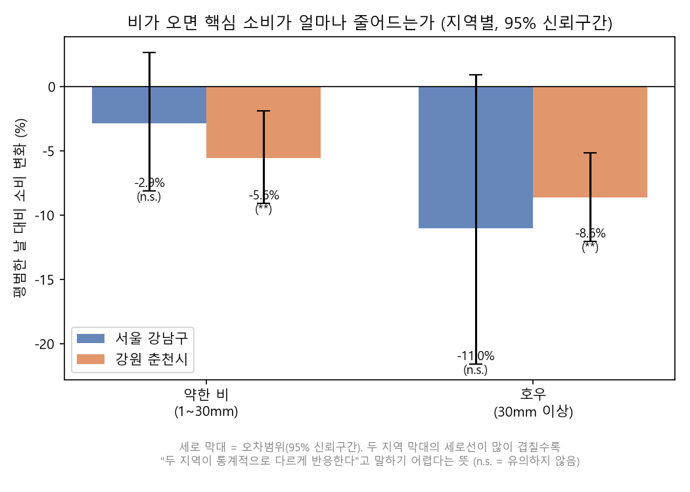
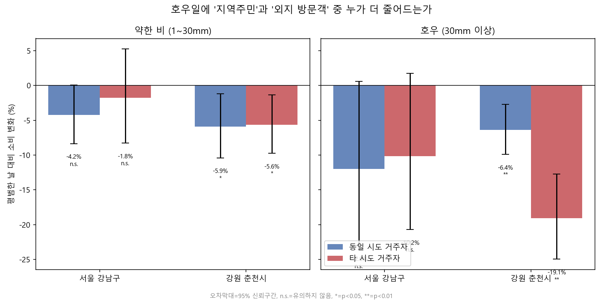
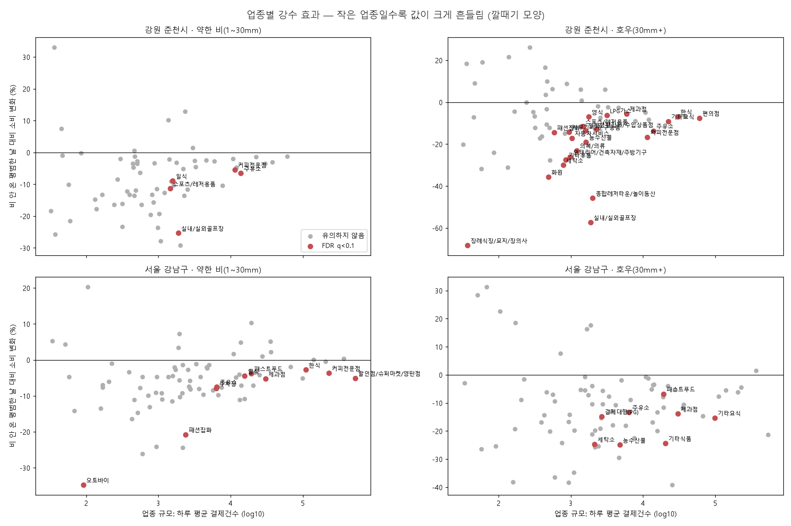
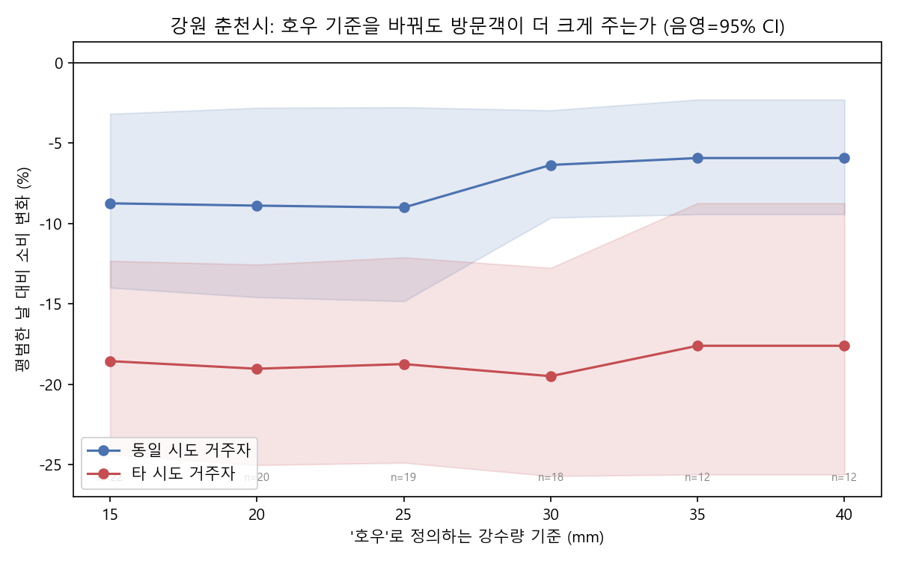
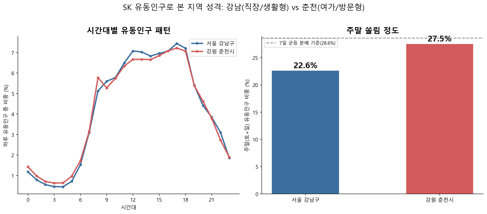
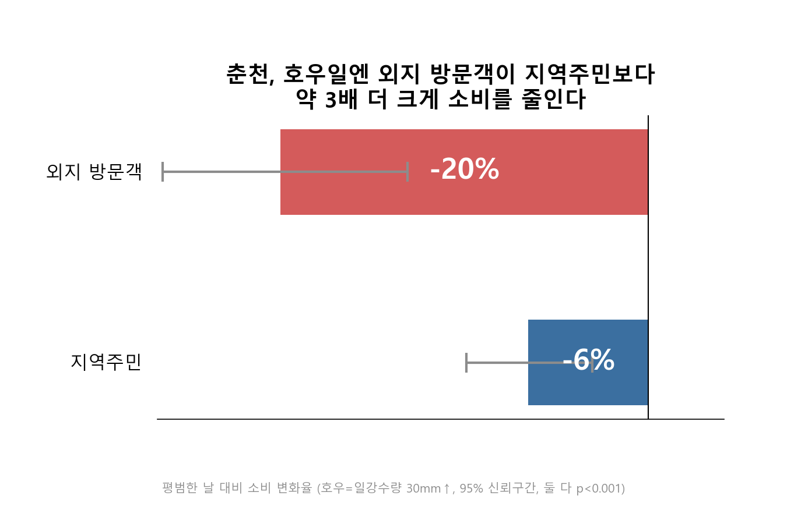

카드소비 · 유동인구 · 기상 데이터로 본 기후위기 취약상권 분석 — 서울 강남구 vs 강원 춘천시, 2025.07.01 ~ 12.31 (184일)
날씨가 소비에 영향을 준다는 건 누구나 짐작합니다. 하지만 정책이나 금융상품을 설계하려면 "어떤 상권이 더 취약한가"를 데이터로 구분할 수 있어야 합니다.
호우·폭염 같은 기후 이벤트가 상권 소비를 얼마나 줄이는가? 그 충격은 지역·시간대·업종·고객 유형에 따라 어떻게 다른가?
데이터 정제·병합, 가설 설정과 통계 검정, 강건성 검증, 시각화, 보고서·발표자료 제작까지 전 과정 단독 수행
서울 강남구(대도시 생활·업무 상권) vs 강원 춘천시(관광 상권), 2025년 7~12월 184일
예측 모델이 아니라 요인의 영향을 검증하는 통계적 추론. "비가 오면 소비가 실제로 줄어드는가, 누구의 소비가 더 줄어드는가"를 묻는 문제이기 때문
카드는 날짜×시군구, 유동인구는 월×50m 격자, 기상은 시간×관측소 단위였습니다. 분석 단위를 "하루 × 지역"으로 정하고 모두 맞췄습니다.
| 데이터 | 규모 | 원래 단위 | 주요 컬럼 |
|---|---|---|---|
| 신한카드 소비 ① | 1,044,710행 | 일 × 지역 × 업종 × 시간대(6시간) × 성별·연령 | 결제금액·건수, 법인 포함 |
| 신한카드 소비 ② | 1,806,800행 | 일 × 지역 × 업종 × 고객 거주지(시도) × 성별·연령 | 결제금액·건수, 법인 제외 |
| SK텔레콤 유동인구 | 월별 3종 × 6개월 | 월 × 50m 격자 | 연령별 · 시간대별 · 요일별 인구 |
| 기상청 ASOS | 2지점 × 4,392시간 | 시간 × 관측소 | 기온, 강수량, 풍속, 습도, QC플래그 |
SK 데이터에는 지역명이 없고 좌표만 있습니다. 격자 좌표를 정렬해 값이 크게 '점프'하는 지점을 찾았고, X_COORD = 983,000을 경계로 두 지역이 겹침 없이 나뉘었습니다.
강남구 격자 (X 956,634 ~ 966,734)
춘천시 격자 (X 1,000,584 ~ 1,043,384)
강남 격자 15,261 × 0.0025 km² — 실제 면적 39.5 km²와 일치해 매핑 검증
X_SPLIT = 983000 # 좌표 정렬 시 값이 크게 점프하는 지점 = 두 지역의 경계
def region_of(x):
return '서울 강남구' if x < X_SPLIT else '강원 춘천시'
df = df.drop_duplicates() # 12월 파일의 통째 중복 행 제거
df['region'] = df['X_COORD'].apply(region_of)
value_cols = [c for c in df.columns if c not in ('STD_YM', 'BLOCK_CD', 'X_COORD', 'Y_COORD', 'region')]
g = df.groupby(['STD_YM', 'region'])[value_cols].sum().reset_index()기상청 관례상 하루는 01시~24시(다음날 00시)입니다. 그래서 관측 시각에서 1시간을 빼 날짜를 정했고, 이를 놓쳐 12/31이 빠졌던 것을 찾아 추가 수집했습니다. 일 단위로 기온(평균·최고·최저), 강수량 합계 등을 집계하고 기후 이벤트 플래그를 만들었습니다.
w = w.drop_duplicates(["지점", "일시"]) # 나눠 받은 파일의 겹치는 시각 제거
w["date"] = (w["dt"] - pd.Timedelta(hours=1)).dt.normalize() # 01~24시가 하루 (00시는 전날)
w["precip"] = w["강수량(mm)"].fillna(0) # 빈칸 = 강수 없음 (QC 검증 후 가정)
weather = w.groupby(["region", "date"]).agg(
temp_max=("기온(°C)", "max"), temp_min=("기온(°C)", "min"),
precip_sum=("precip", "sum"), n_hours=("dt", "count"),
).reset_index()
weather["heat_day"] = weather["temp_max"] >= 33 # 폭염
weather["heavy_rain_day"] = weather["precip_sum"] >= 30 # 호우| 기후 이벤트 | 기준 | 강남구 일수 | 춘천시 일수 |
|---|---|---|---|
| 폭염 | 일 최고기온 ≥ 33℃ | 24 | 24 |
| 열대야 | 일 최저기온 ≥ 25℃ | 44 | 5 |
| 강수일 | 일 강수량 ≥ 1mm | 49 | 48 |
| 호우 | 일 강수량 ≥ 30mm | 15 | 18 |
데이터②의 고객 거주지(시도)와 가맹점 시도를 비교해 동일 시도 거주자 / 타 시도 방문객을 나눴습니다. 강남구의 '동일 시도'는 서울 전체(매출의 37.1%), 춘천시는 강원 전체(79.0%)라 기준이 비대칭이라는 점은 해석 시 주의했습니다.
# 세금공과금(28%)·미분류(22%)는 상권 소비가 아니고 소수 거액 결제가 일 합계를 좌우 → 제외
CORE_EXCLUDE = ['세금공과금', 'ZZ_나머지']
df2_core = df2[~df2['MCT_RY_CD'].isin(CORE_EXCLUDE)]
def local_flag(row): # 가맹점 시도 == 고객 거주 시도 → 지역주민
mct_sido = row['MCT_SGG_CD'].split(' ')[0] # '서울 강남구' → '서울'
cln = row['CLN_SGG_CD']
return '지역주민' if mct_sido == cln else ('정보없음' if cln == '정보없음' else '외부방문객')
df2['visitor_type'] = df2.apply(local_flag, axis=1)카드(5개 집계본) + 기상 + SK 기준선 + 월·요일·공휴일 변수를 붙여 merged_daily.csv 368행(184일 × 2지역)을 만들었고, 이후 모든 분석이 이 표에서 출발합니다. 공휴일(8/15, 10/3~10/9 추석 연휴, 12/25)은 검색으로 확인해 플래그로 넣었습니다.
병합 후 이상해 보이는 값을 그냥 넘기지 않고 원인을 하나씩 확인했습니다. 이 중 하나(④)는 분석 결론을 바꿨습니다.
| 파일 | 전체 행 | 완전 동일한 중복 행 |
|---|---|---|
| flow_time_pop_202512.csv | 185,090 | 92,545 (정확히 절반) |
| flow_wkdy_pop_202512.csv | 242,534 | 121,267 (정확히 절반) |
모든 행이 값까지 똑같이 두 번 들어 있어 12월 유동인구가 2배로 부풀어 있었습니다 → drop_duplicates() 후 재집계.
강수량 빈칸 중 1,496건은 결측 표기(QC 플래그 9)였습니다. 비가 실제로 온 시각과 날씨 조건을 비교해 간접 검증했습니다.
| 구분 | 시간 수 | 평균 습도 | 기온−이슬점 | '비 오는 조건' 비율* |
|---|---|---|---|---|
| 비 옴 (값 > 0) | 827 | 92.1% | 1.40℃ | 61.2% |
| 0.0 기록 | 421 | 83.0% | 3.18℃ | 20.0% |
| 빈칸 + QC 9 | 1,496 | 76.7% | 4.47℃ | 7.8% |
| 빈칸 (플래그 없음) | 6,040 | 69.0% | 6.26℃ | 7.1% |
* 습도 ≥ 93% 이고 기온−이슬점 < 1.5℃. QC 9 빈칸은 실제 비 온 시각(61%)이 아니라 일반 빈칸(7.1%)과 비슷 → '강수 없음'으로 처리. 단 117건은 비 조건에 해당해 일부 누락 가능성은 한계로 남김.
| 업종 (데이터②) | 전체 금액 대비 비중 |
|---|---|
| 세금공과금 | 28.1% |
| ZZ_나머지 (미분류) | 21.5% |
| 일반병원 | 5.3% |
| 할인점/슈퍼마켓/양판점 | 4.4% |
| 컴퓨터/소프트웨어 | 4.3% |
| 보험 | 3.5% |
두 항목이 금액의 49.6%(강남구는 51.4%)였고, 소수 거액 결제가 하루 합계를 좌우했습니다. 같은 지역·월·요일 평균 대비 소비가 가장 튀었던 날들은 모두 이 두 항목 때문이었습니다.
| 날짜 | 지역 | 평소 대비 소비 | 그날 최대 업종 | 그날 금액 중 비중 |
|---|---|---|---|---|
| 2025-12-30 | 춘천시 | 2.05배 | ZZ_나머지 | 63.5% |
| 2025-12-29 | 강남구 | 1.97배 | 세금공과금 | 68.3% |
| 2025-12-15 | 춘천시 | 1.87배 | ZZ_나머지 | 70.1% |
| 2025-09-30 | 강남구 | 1.76배 | 세금공과금 | 53.3% |
두 카드 데이터 모두 결측치 0, 기간 184일이 정확히 일치했습니다. 문제는 분포였습니다.


본격적인 모형 전에, 가정이 적은 순열검정으로 신호가 있는지 먼저 확인했습니다. 소비를 "같은 지역·월·요일 평균 대비 비율(지수)"로 바꾸고, 이벤트일과 나머지 날의 평균 차이가 날짜를 무작위로 10,000번 섞었을 때보다 극단적인지 봤습니다.
| 지역 | 이벤트 | 대상 | 일수 | 평소 대비 지수 차이 | p (전체) | p (공휴일 제외) |
|---|---|---|---|---|---|---|
| 춘천 | 호우 | 전체 | 18 | −6.2%p | 0.0009 | 0.0001 |
| 춘천 | 호우 | 동일 시도 | 18 | −3.8%p | 0.067 | 0.006 |
| 춘천 | 호우 | 타 시도 | 18 | −16.5%p | 0.0003 | <0.0001 |
| 춘천 | 강수일 | 전체 | 48 | −5.1%p | <0.0001 | 0.0001 |
| 강남 | 호우 | 전체 | 15 | −8.1%p | 0.041 | 0.19 |
| 강남 | 강수일 | 전체 | 49 | −4.0%p | 0.097 | 0.15 |
| 춘천 | 폭염 | 전체 | 24 | +2.1%p | 0.19 | 0.14 |
| 강남 | 폭염 | 전체 | 24 | +2.3%p | 0.47 | 0.54 |
# 소비 지수 = 당일 소비 / 같은 (지역, 월, 요일) 평균
m[col + "_idx"] = m[col] / m.groupby(["region", "month", "weekday"])[col].transform("mean")
obs = x[f].mean() - x[~f].mean() # 실제 차이: 이벤트일 평균 - 나머지 날 평균
perm = np.empty(N)
for i in range(N): # 날짜를 섞어 k일을 '가짜 이벤트일'로 뽑기를 N=10,000번
ix = rng.permutation(len(x))
perm[i] = x[ix[:k]].mean() - x[ix[k:]].mean()
p_value = (np.abs(perm) >= abs(obs)).mean() # 우연히 이만큼 극단적일 확률춘천은 비가 오면 소비가 뚜렷하게 줄고 특히 타 시도 방문객이 크게 줄었습니다. 강남은 공휴일을 빼면 신호가 사라졌습니다. 폭염은 두 지역 모두 영향이 없었습니다.
log(핵심 소비) = α + Σ 월 더미 + Σ 요일 더미 + β₁·공휴일
+ β₂·약한비(1~30mm) + β₃·호우(30mm↑) + β₄·폭염(33℃↑) + ε
효과(%) = (exp(β) − 1) × 100 ← '비 안 온 평범한 날' 대비 소비 변화율비가 며칠씩 이어지는 자기상관이 있으면 일반 표준오차는 과소추정됨 → Newey-West(최대 3일 시차)로 보정
업종 145개를 동시에 검정하면 우연한 유의성이 섞임 → Benjamini–Hochberg로 q < 0.1인 업종만 '유의'로 봄
"두 그룹의 반응이 다른가"는 각자 유의한지가 아니라 차이 자체를 검정해야 함 → 지역 × 기후 상호작용항
모든 검정이 같은 틀을 쓰도록 공통 함수로 만들어, 스크립트마다 넣는 변수만 바꿔 재사용했습니다.
def fit_hac(g, y, terms):
"""y(이미 로그) ~ 월+요일 더미 + g[terms], HAC(3일)"""
X = pd.get_dummies(g[["month", "weekday"]].astype(str), drop_first=True, dtype=float)
for c in terms:
X[c] = g[c].astype(float)
X = sm.add_constant(X).loc[y.index]
return sm.OLS(y, X).fit(cov_type="HAC", cov_kwds={"maxlags": 3})
def pct_ci(res, term):
"""로그 계수 → (효과%, 95% 하한%, 상한%, p값)"""
coef, se = res.params[term], res.bse[term]
to_pct = lambda b: (np.exp(b) - 1) * 100
return to_pct(coef), to_pct(coef - 1.96 * se), to_pct(coef + 1.96 * se), res.pvalues[term]| 지역 | 대상 | 약한 비 (1~30mm) | p | 호우 (30mm↑) | p | 폭염 |
|---|---|---|---|---|---|---|
| 춘천 | 전체 | −5.6% | 0.003 | −8.6% | <0.001 | +0.4% (n.s.) |
| 춘천 | 동일 시도 | −5.9% | 0.015 | −6.4% | <0.001 | 0.0% (n.s.) |
| 춘천 | 타 시도 | −5.6% | 0.011 | −19.1% | <0.001 | +2.2% (n.s.) |
| 강남 | 전체 | −2.9% | 0.30 | −11.0% | 0.069 | −0.4% (n.s.) |
| 강남 | 동일 시도 | −4.2% | 0.054 | −12.0% | 0.061 | −0.2% (n.s.) |
| 강남 | 타 시도 | −1.8% | 0.61 | −10.2% | 0.091 | −0.5% (n.s.) |
CUSTOMER_COLS = {"동일 시도 거주자": "s2c_local_amt", "타 시도 거주자": "s2c_visitor_amt"}
for region, g in m.groupby("region"):
g = g.set_index("date").sort_index()
for cust, col in CUSTOMER_COLS.items():
res = fit_hac(g, np.log(g[col]), ["is_holiday", "rain_light", "rain_heavy", "heat_day"])
for term in ["rain_light", "rain_heavy"]:
results[(region, cust, term)] = pct_ci(res, term) # (효과%, 95% 하한, 상한, p)

데이터①의 6시간 단위 시간대로 같은 모형을 돌렸습니다(법인·세금·미분류 제외).
| 지역 | 시간대 | 약한 비 | p | 호우 | p |
|---|---|---|---|---|---|
| 춘천 | 00~05시 | −1.6% | 0.52 | −8.1% | 0.019 |
| 춘천 | 06~11시 | −3.7% | 0.13 | −12.4% | <0.001 |
| 춘천 | 12~17시 | −6.8% | 0.002 | −6.5% | 0.002 |
| 춘천 | 18~23시 | −5.2% | 0.006 | −10.3% | <0.001 |
| 강남 | 00~05시 | −1.0% | 0.85 | −7.0% | 0.023 |
| 강남 | 06~11시 | −2.4% | 0.57 | −8.9% | 0.28 |
| 강남 | 12~17시 | −3.0% | 0.34 | −13.3% | 0.057 |
| 강남 | 18~23시 | −3.6% | 0.019 | −9.8% | 0.017 |
춘천은 호우일에 모든 시간대가 줄었습니다. "특정 시간대만 유독 줄었나"를 보려고 하루 전체 중 각 시간대의 비중을 종속변수로 다시 검정하니, 변화는 최대 ±4%(춘천 06~11시 −4.1%, 12~17시 +2.4%)로 전체 감소(−8 ~ −11%)에 비해 작았습니다. → 시간대는 핵심 축으로 쓰지 않음.
일별 커버리지 95% 이상 + 하루 평균 30건 이상인 업종만 포함했습니다(춘천 64개, 강남 81개). FDR 보정 후 q < 0.1인 업종만 '유의'로 봤습니다.
for (region, name), g in ind.groupby(["MCT_SGG_CD", "MCT_RY_CD"]):
cov = g["date"].nunique() / n_days # 184일 중 데이터가 있는 날 비율 (마스킹으로 빠진 날)
if cov < 0.95 or g["USE_CNT"].mean() < 30:
continue # 커버리지·건수 부족 업종은 제외
rows.append({"region": region, "industry": name, **fit(region, g.set_index("date")["TS_AT"])})
res = pd.DataFrame(rows)
# FDR 보정: 업종 수십 개를 동시에 검정하면 우연히 p<0.05인 업종이 섞임 → 지역별로 q값 계산
for t in ["rain_light", "rain_heavy", "heat_day"]:
for region, idx in res.groupby("region").groups.items():
res.loc[idx, f"{t}_q"] = multipletests(res.loc[idx, f"{t}_p"], method="fdr_bh")[1]
| 업종 | 방문객 비중 | 하루 평균 건수 | 효과 | p | q (FDR) |
|---|---|---|---|---|---|
| 장례식장/묘지/장의사 | 49% | 37 | −68.3% | 0.015 | 0.046 |
| 실내/실외골프장 | 78% | 1,882 | −57.3% | 0.000 | 0.000 |
| 종합레저타운/놀이동산 | 80% | 2,007 | −45.8% | 0.001 | 0.005 |
| 화원 | 34% | 488 | −35.6% | 0.000 | 0.000 |
| 세탁소 | 9% | 782 | −30.0% | 0.000 | 0.000 |
| 기타유통 | 13% | 850 | −27.5% | 0.000 | 0.000 |
| 인테리어/건축자재/주방기구 | 11% | 980 | −26.1% | 0.005 | 0.020 |
| 의복/의류 | 10% | 1,209 | −23.0% | 0.000 | 0.000 |
| 농수산물 | 10% | 1,624 | −19.0% | 0.005 | 0.020 |
| 자동차서비스 | 8% | 1,030 | −17.1% | 0.009 | 0.031 |
| 커피전문점 | 20% | 11,487 | −16.6% | 0.000 | 0.000 |
| 패션잡화 | 9% | 585 | −14.4% | 0.009 | 0.031 |
| 사무기기/문구용품 | 13% | 948 | −14.2% | 0.004 | 0.020 |
| 주유소 | 15% | 13,872 | −13.6% | 0.000 | 0.000 |
| 일식 | 18% | 1,582 | −13.4% | 0.000 | 0.001 |
| 생활잡화/수입상품점 | 14% | 2,262 | −13.0% | 0.010 | 0.031 |
| 스포츠/레저용품 | 10% | 1,447 | −11.6% | 0.026 | 0.075 |
| 기타요식 | 23% | 22,467 | −9.2% | 0.000 | 0.000 |
| 편의점 | 18% | 60,446 | −7.6% | 0.000 | 0.000 |
| 양식 | 20% | 1,772 | −7.0% | 0.028 | 0.079 |
| 한식 | 26% | 30,254 | −6.8% | 0.003 | 0.013 |
| LPG가스 | 8% | 3,174 | −6.3% | 0.000 | 0.001 |
| 제과점 | 15% | 5,936 | −5.5% | 0.010 | 0.031 |
| 업종 | 방문객 비중 | 하루 평균 건수 | 효과 | p | q (FDR) |
|---|---|---|---|---|---|
| 농수산물 | 17% | 4,760 | −24.9% | 0.005 | 0.062 |
| 세탁소 | 14% | 2,134 | −24.7% | 0.007 | 0.083 |
| 기타식품 | 36% | 20,488 | −24.4% | 0.001 | 0.013 |
| 기타요식 | 36% | 98,990 | −15.3% | 0.001 | 0.013 |
| 결제대행(PG) | 70% | 2,685 | −14.8% | 0.008 | 0.083 |
| 제과점 | 25% | 30,334 | −13.9% | 0.004 | 0.062 |
| 주유소 | 21% | 6,433 | −13.3% | 0.000 | 0.007 |
| 패스트푸드 | 32% | 19,235 | −6.8% | 0.000 | 0.007 |
| 업종 | 방문객 비중 | 하루 평균 건수 | 효과 | p | q (FDR) |
|---|---|---|---|---|---|
| 실내/실외골프장 | 78% | 1,882 | −25.3% | 0.008 | 0.100 |
| 스포츠/레저용품 | 10% | 1,447 | −11.4% | 0.002 | 0.064 |
| 일식 | 18% | 1,582 | −8.9% | 0.005 | 0.082 |
| 주유소 | 15% | 13,872 | −6.5% | 0.001 | 0.064 |
| 커피전문점 | 20% | 11,487 | −5.4% | 0.004 | 0.082 |
| 업종 | 방문객 비중 | 하루 평균 건수 | 효과 | p | q (FDR) |
|---|---|---|---|---|---|
| 오토바이 | 28% | 91 | −34.8% | 0.007 | 0.058 |
| 패션잡화 | 42% | 2,389 | −20.7% | 0.005 | 0.052 |
| 주차장 | 45% | 6,319 | −7.9% | 0.001 | 0.019 |
| 주유소 | 21% | 6,433 | −7.5% | 0.000 | 0.000 |
| 제과점 | 25% | 30,334 | −5.3% | 0.000 | 0.003 |
| 할인점/슈퍼마켓/양판점 | 68% | 535,435 | −5.1% | 0.001 | 0.015 |
| 일식 | 33% | 15,701 | −4.5% | 0.004 | 0.048 |
| 패스트푸드 | 32% | 19,235 | −3.8% | 0.000 | 0.000 |
| 커피전문점 | 63% | 228,937 | −3.7% | 0.000 | 0.002 |
| 한식 | 33% | 110,580 | −2.8% | 0.006 | 0.053 |
| 업종 | 방문객 비중 | 하루 평균 건수 | 효과 | p | q (FDR) |
|---|---|---|---|---|---|
| 장례식장/묘지/장의사 | 49% | 37 | −68.3% | 0.015 | 0.046 |
| 실내/실외골프장 | 78% | 1,882 | −57.3% | 0.000 | 0.000 |
| 종합레저타운/놀이동산 | 80% | 2,007 | −45.8% | 0.001 | 0.005 |
| 화원 | 34% | 488 | −35.6% | 0.000 | 0.000 |
| 중고품판매점 | 4% | 58 | −31.7% | 0.042 | 0.107 |
| 연구/번역서비스 | 44% | 133 | −31.2% | 0.069 | 0.142 |
| 세탁소 | 9% | 782 | −30.0% | 0.000 | 0.000 |
| 기타의료 | 18% | 510 | −27.6% | 0.225 | 0.344 |
| 기타유통 | 13% | 850 | −27.5% | 0.000 | 0.000 |
| 인테리어/건축자재/주방기구 | 11% | 980 | −26.1% | 0.005 | 0.020 |
| 가구 | 8% | 85 | −24.0% | 0.375 | 0.510 |
| 의복/의류 | 10% | 1,209 | −23.0% | 0.000 | 0.000 |
| 안마/마사지 | 20% | 32 | −20.2% | 0.350 | 0.498 |
| 농수산물 | 10% | 1,624 | −19.0% | 0.005 | 0.020 |
| 서점 | 12% | 370 | −17.2% | 0.068 | 0.142 |
| 자동차서비스 | 8% | 1,030 | −17.1% | 0.009 | 0.031 |
| 커피전문점 | 20% | 11,487 | −16.6% | 0.000 | 0.000 |
| 호텔/콘도 | 86% | 396 | −16.3% | 0.469 | 0.566 |
| 한의원 | 10% | 821 | −15.0% | 0.055 | 0.130 |
| 패션잡화 | 9% | 585 | −14.4% | 0.009 | 0.031 |
| 사무기기/문구용품 | 13% | 948 | −14.2% | 0.004 | 0.020 |
| 주유소 | 15% | 13,872 | −13.6% | 0.000 | 0.000 |
| 일식 | 18% | 1,582 | −13.4% | 0.000 | 0.001 |
| 생활잡화/수입상품점 | 14% | 2,262 | −13.0% | 0.010 | 0.031 |
| 애완동물 | 9% | 509 | −12.2% | 0.061 | 0.140 |
| 시계/귀금속 | 18% | 317 | −12.1% | 0.424 | 0.542 |
| 치과병원 | 8% | 1,068 | −11.6% | 0.165 | 0.278 |
| 스포츠/레저용품 | 10% | 1,447 | −11.6% | 0.026 | 0.075 |
| 정육점 | 11% | 1,510 | −11.3% | 0.225 | 0.344 |
| 완구/아동용자전거 | 18% | 2,216 | −10.7% | 0.195 | 0.321 |
| 모텔,여관,기타숙박 | 70% | 461 | −10.5% | 0.088 | 0.170 |
| 기타요식 | 23% | 22,467 | −9.2% | 0.000 | 0.000 |
| 일반병원 | 10% | 7,750 | −9.0% | 0.162 | 0.278 |
| 기타식품 | 22% | 11,967 | −8.3% | 0.052 | 0.129 |
| 편의점 | 18% | 60,446 | −7.6% | 0.000 | 0.000 |
| 미용실 | 8% | 2,544 | −7.3% | 0.124 | 0.224 |
| 미용서비스 | 7% | 46 | −7.1% | 0.718 | 0.781 |
| 양식 | 20% | 1,772 | −7.0% | 0.028 | 0.079 |
| 한식 | 26% | 30,254 | −6.8% | 0.003 | 0.013 |
| 동물병원 | 9% | 316 | −6.7% | 0.453 | 0.558 |
| 할인점/슈퍼마켓/양판점 | 10% | 37,806 | −6.7% | 0.066 | 0.142 |
| LPG가스 | 8% | 3,174 | −6.3% | 0.000 | 0.001 |
| 제과점 | 15% | 5,936 | −5.5% | 0.010 | 0.031 |
| 약국 | 9% | 10,774 | −4.8% | 0.082 | 0.164 |
| 유흥업소 | 14% | 299 | −4.6% | 0.575 | 0.657 |
| 화장품 | 14% | 166 | −4.4% | 0.720 | 0.781 |
| 자동차용품 | 7% | 462 | −3.2% | 0.785 | 0.820 |
| 패스트푸드 | 14% | 4,584 | −2.5% | 0.126 | 0.224 |
| 중식 | 16% | 3,284 | −2.3% | 0.311 | 0.453 |
| 종합병원 | 13% | 2,356 | −1.9% | 0.792 | 0.820 |
| 가전 | 10% | 242 | −0.0% | 0.999 | 0.999 |
| 스포츠시설 | 32% | 1,403 | +0.9% | 0.921 | 0.936 |
| 헬스장 | 10% | 447 | +3.7% | 0.670 | 0.752 |
| 노래방 | 13% | 1,374 | +6.1% | 0.387 | 0.516 |
| 게임방/오락실 | 21% | 2,970 | +6.1% | 0.040 | 0.106 |
| 학원/학습지 | 4% | 555 | +6.3% | 0.573 | 0.657 |
| 싸우나/목욕탕 | 22% | 880 | +8.9% | 0.105 | 0.199 |
| 컴퓨터/소프트웨어 | 8% | 47 | +9.0% | 0.794 | 0.820 |
| 영화/공연 | 14% | 469 | +9.9% | 0.203 | 0.326 |
| 주차장 | 22% | 442 | +16.6% | 0.266 | 0.396 |
| 독서실 | 4% | 36 | +18.5% | 0.570 | 0.657 |
| 예식장/결혼서비스 | 9% | 60 | +19.1% | 0.414 | 0.541 |
| 수제용품점 | 37% | 138 | +21.5% | 0.435 | 0.546 |
| 문화용품 | 37% | 272 | +26.2% | 0.362 | 0.504 |
| 업종 | 방문객 비중 | 하루 평균 건수 | 효과 | p | q (FDR) |
|---|---|---|---|---|---|
| 백화점 | 29% | 25,171 | −39.2% | 0.178 | 0.336 |
| 예식장/결혼서비스 | 47% | 931 | −38.3% | 0.150 | 0.329 |
| 중고품판매점 | 22% | 158 | −38.2% | 0.032 | 0.170 |
| 문화용품 | 42% | 597 | −36.5% | 0.045 | 0.204 |
| 기타의료 | 58% | 1,100 | −34.8% | 0.053 | 0.204 |
| 치과병원 | 42% | 4,634 | −29.4% | 0.340 | 0.501 |
| 장례식장/묘지/장의사 | 75% | 58 | −26.4% | 0.324 | 0.486 |
| 인테리어/건축자재/주방기구 | 50% | 2,160 | −25.7% | 0.161 | 0.329 |
| 오토바이 | 28% | 91 | −25.4% | 0.083 | 0.232 |
| 패션잡화 | 42% | 2,389 | −25.3% | 0.161 | 0.329 |
| 농수산물 | 17% | 4,760 | −24.9% | 0.005 | 0.062 |
| 세탁소 | 14% | 2,134 | −24.7% | 0.007 | 0.083 |
| 기타식품 | 36% | 20,488 | −24.4% | 0.001 | 0.013 |
| 가전 | 35% | 757 | −24.1% | 0.209 | 0.361 |
| 미용실 | 28% | 7,524 | −22.5% | 0.102 | 0.275 |
| 할인점/슈퍼마켓/양판점 | 68% | 535,435 | −21.3% | 0.064 | 0.218 |
| 연구/번역서비스 | 48% | 1,966 | −21.1% | 0.070 | 0.218 |
| 주류판매 | 22% | 514 | −20.1% | 0.170 | 0.329 |
| 학원/학습지 | 27% | 15,673 | −20.0% | 0.031 | 0.170 |
| 기타유통 | 42% | 2,160 | −19.8% | 0.150 | 0.329 |
| 자동차서비스 | 41% | 1,124 | −19.7% | 0.116 | 0.285 |
| 가구 | 40% | 168 | −19.2% | 0.617 | 0.701 |
| 헬스장 | 18% | 2,556 | −19.2% | 0.158 | 0.329 |
| 사무기기/문구용품 | 34% | 5,717 | −18.1% | 0.028 | 0.170 |
| 한의원 | 42% | 3,809 | −17.9% | 0.385 | 0.529 |
| 미용서비스 | 28% | 392 | −16.9% | 0.106 | 0.277 |
| 서점 | 52% | 13,459 | −16.9% | 0.025 | 0.170 |
| 화원 | 37% | 925 | −16.8% | 0.068 | 0.218 |
| 정육점 | 14% | 2,635 | −15.4% | 0.075 | 0.218 |
| 기타요식 | 36% | 98,990 | −15.3% | 0.001 | 0.013 |
| 결제대행(PG) | 70% | 2,685 | −14.8% | 0.008 | 0.083 |
| 보험 | 87% | 67,540 | −14.6% | 0.513 | 0.608 |
| 악기/음반 | 50% | 426 | −14.4% | 0.425 | 0.564 |
| 동물병원 | 25% | 953 | −14.1% | 0.050 | 0.204 |
| 제과점 | 25% | 30,334 | −13.9% | 0.004 | 0.062 |
| 일식 | 33% | 15,701 | −13.4% | 0.014 | 0.126 |
| 주차장 | 45% | 6,319 | −13.4% | 0.074 | 0.218 |
| 주유소 | 21% | 6,433 | −13.3% | 0.000 | 0.007 |
| 스포츠/레저용품 | 53% | 3,633 | −13.0% | 0.111 | 0.281 |
| 일반병원 | 46% | 35,308 | −11.8% | 0.324 | 0.486 |
| 상품권/복권 | 69% | 19,335 | −11.6% | 0.301 | 0.486 |
| 시계/귀금속 | 50% | 4,160 | −10.7% | 0.323 | 0.486 |
| 약국 | 38% | 36,390 | −10.5% | 0.412 | 0.556 |
| 스포츠시설 | 26% | 2,777 | −10.5% | 0.196 | 0.348 |
| 방문판매/다단계판매 | 82% | 1,961 | −10.4% | 0.219 | 0.369 |
| 실내/실외골프장 | 36% | 600 | −9.4% | 0.197 | 0.348 |
| 화장품 | 38% | 6,697 | −8.9% | 0.461 | 0.601 |
| 자동차용품 | 41% | 205 | −8.8% | 0.496 | 0.608 |
| 생활잡화/수입상품점 | 41% | 19,008 | −7.9% | 0.382 | 0.529 |
| LPG가스 | 28% | 3,339 | −7.7% | 0.021 | 0.169 |
| 한식 | 33% | 110,580 | −7.6% | 0.047 | 0.204 |
| 전용매장 | 6% | 1,731 | −7.1% | 0.148 | 0.329 |
| 유흥업소 | 32% | 558 | −7.0% | 0.467 | 0.601 |
| 패스트푸드 | 32% | 19,235 | −6.8% | 0.000 | 0.007 |
| 독서실 | 25% | 464 | −6.2% | 0.514 | 0.608 |
| 편의점 | 30% | 204,951 | −6.2% | 0.039 | 0.197 |
| 영화/공연 | 29% | 2,749 | −5.6% | 0.484 | 0.608 |
| 쇼핑몰 | 73% | 140,938 | −5.5% | 0.169 | 0.329 |
| 완구/아동용자전거 | 61% | 1,556 | −5.5% | 0.591 | 0.684 |
| 통신요금(이동,시내전화) | 84% | 27,591 | −5.4% | 0.668 | 0.741 |
| 싸우나/목욕탕 | 28% | 1,373 | −5.3% | 0.351 | 0.508 |
| 중식 | 32% | 13,181 | −5.1% | 0.192 | 0.348 |
| 커피전문점 | 63% | 228,937 | −4.4% | 0.069 | 0.218 |
| 여행사/항공사 | 63% | 1,962 | −4.0% | 0.855 | 0.876 |
| 게임방/오락실 | 34% | 21,958 | −3.9% | 0.244 | 0.404 |
| 종합병원 | 56% | 13,693 | −3.6% | 0.623 | 0.701 |
| 의복/의류 | 43% | 14,046 | −3.4% | 0.701 | 0.767 |
| 수제용품점 | 40% | 34 | −2.9% | 0.927 | 0.939 |
| 노래방 | 33% | 5,001 | −1.9% | 0.718 | 0.775 |
| 체인점 | 15% | 226 | −1.6% | 0.810 | 0.860 |
| 양식 | 36% | 11,760 | −1.3% | 0.848 | 0.876 |
| 고속버스/철도/여객선 | 76% | 10,895 | −0.7% | 0.818 | 0.860 |
| 회계/변리서비스 | 37% | 1,575 | −0.6% | 0.966 | 0.966 |
| 컴퓨터/소프트웨어 | 78% | 367,012 | +1.5% | 0.518 | 0.608 |
| 애완동물 | 29% | 719 | +7.7% | 0.494 | 0.608 |
| 모텔,여관,기타숙박 | 46% | 1,668 | +16.3% | 0.030 | 0.170 |
| 호텔/콘도 | 34% | 1,885 | +17.8% | 0.053 | 0.204 |
| 안마/마사지 | 28% | 170 | +18.5% | 0.062 | 0.218 |
| 수입자동차 | 58% | 104 | +22.7% | 0.369 | 0.524 |
| 부동산중개 | 44% | 51 | +28.3% | 0.171 | 0.329 |
| 면세점 | 40% | 69 | +31.3% | 0.310 | 0.486 |
폭염은 대부분 영향이 없었습니다. 통과한 업종은 춘천 골프장 −23.6%, 강남 양식 −15.7%·제과점 −5.4%, 그리고 쇼핑몰 +15.6%·커피전문점 +4.0%(실내로 옮겨가는 대체 소비 가능성, 단 q=0.089로 잠정적이라 결론에서는 제외)입니다.
"왜 춘천 방문객이 더 줄어드는가"를 설명하는 가설들을 차례로 검정했고, 근거가 없는 주장은 버렸습니다.
업종별 타 시도 방문객 비중과 비 효과 크기의 스피어만 상관:
| 지역 | 업종 수 | 약한 비 ρ (p) | 호우 ρ (p) |
|---|---|---|---|
| 춘천 | 64 | −0.043 (0.74) | −0.124 (0.33) |
| 강남 | 81 | 0.159 (0.16) | 0.097 (0.39) |
기각업종 단위로는 관계 없음 → 업종이 아니라 고객 구성(지역 단위)으로 시각을 바꿈
각 후보의 "차이 자체"를 직접 검정했습니다. 예: (b)는 log(타 시도 금액 / 동일 시도 금액)을 종속변수로 두어, 계수가 곧 "비 온 날 방문객이 지역주민보다 얼마나 더 줄었나"가 되도록 했습니다.
| 후보 | 호우일 결과 | 판단 |
|---|---|---|
| (b) 타 시도 vs 동일 시도 | 춘천: 비율 −13.6% (p<0.001) / 강남: +2.1% (p=0.37) | 채택지역 단위로 가장 뚜렷 |
| (a) 레저·야외 vs 생활 업종 | 춘천: 레저 −23.4% vs 생활 −9.3% (p=0.030) / 강남: 반대 방향 (−0.5% vs −15.5%) | 기각지역마다 방향이 다르고, 분류를 결과를 본 뒤 정한 위험 |
| (c) 호우일 시간대 쏠림 | 시간대 비중 변화 최대 ±4% (춘천 06~11시 −4.1%) | 기각전체 감소에 비해 작음 |
# 후보 (b): 두 그룹의 '차이 자체'를 종속변수로 → 계수 = 비 온 날 방문객이 주민보다 얼마나 '더' 줄었나
for region, g in m.groupby("region"):
g = g.set_index("date").sort_index()
r = fit_log(region, np.log(g["s2c_visitor_amt"]) - np.log(g["s2c_local_amt"]))(b)의 한계도 확인: 업종 단위로 쪼개면 호우일에 타 시도가 더 줄어든 업종은 춘천 54개 중 61%(부호검정 p=0.13)로 일관되지 않음 → 업종 구성보다 "먼 곳에서 오는 사람이 궂은 날 이동 자체를 미룬다"는 방문 행동 차이로 해석(추정).
강남(지하철 6개 노선·약 30개 역, 강남역 지하상가 880m) vs 춘천(지하철 없음, 실외형 상권)이라는 그럴듯한 설명. 지역별 결과를 따로 보면 "강남은 유의하지 않고 춘천은 유의"라 그렇게 읽고 싶어집니다. 하지만 두 지역을 한 모형에 넣고 차이 자체를 상호작용항으로 검정했습니다.
| 항목 | 효과 | p |
|---|---|---|
| 강남 호우 (기준) | −13.0% | 0.040 |
| 춘천 호우 (총효과) | −8.1% | 0.005 |
| 지역 × 호우 상호작용 | +5.7% | 0.399 |
| 지역 × 약한 비 상호작용 | +0.4% | 0.921 |
| 지역 × 폭염 상호작용 | −0.9% | 0.833 |
# 두 지역을 한 모형에 넣고, 지역 × 기후 상호작용항으로 '반응 차이'를 직접 검정 (기준 = 강남)
m = load_merged().sort_values(["region", "date"]).reset_index(drop=True)
m["region_cc"] = (m["region"] == "강원 춘천시").astype(float)
terms = ["is_holiday", "region_cc"]
for t in ["rain_light", "rain_heavy", "heat_day"]:
m[f"region_cc_x_{t}"] = m["region_cc"] * m[t]
terms += [t, f"region_cc_x_{t}"]
res = fit_hac(m, np.log(m["s2c_amt"]), terms)
# 춘천의 총 효과 = 강남 계수 + 상호작용 (선형결합 검정)
tt = res.t_test("rain_heavy + region_cc_x_rain_heavy = 0")기각차이가 유의하지 않고, 점추정치는 오히려 강남이 더 큼(−13% vs −8%). "강남은 안전하다"는 지역 간 비교 주장은 하지 않기로 했고, 인프라 차이는 정성적 배경 설명으로만 사용
"춘천 안에서, 호우일에 타 시도 방문객 소비가 동일 시도 거주자보다 약 3배 크게 준다" — 지역 간 비교가 아니라 한 지역 안의 고객 구성별 비교라서 더 좁지만 훨씬 단단한 주장입니다.
채택이를 일반화해 "외지 방문객 매출 비중이 높은 상권 = 기후 취약 상권"이라는 조작적 정의를 제안 (춘천 타 시도 매출 비중 21%)
# ① 호우 기준값을 바꿔가며 같은 회귀를 반복
for t in [15, 20, 25, 30, 35, 40]:
gt = g.assign(rain_mid=(g["precip_sum"] >= 1) & (g["precip_sum"] < t),
rain_heavy=g["precip_sum"] >= t)
for cust, col in CUSTOMER_COLS.items():
res = fit_hac(gt, np.log(gt[col]), ["is_holiday", "rain_mid", "rain_heavy"])
pct, lo, hi, pv = pct_ci(res, "rain_heavy")
# ② 전날 호우 변수를 추가해 지연효과 확인
g["rain_heavy_lag1"] = g["rain_heavy"].shift(1)
res = fit_hac(gg, np.log(gg[col]), ["is_holiday", "rain_light", "rain_heavy", "rain_heavy_lag1"])| 기준 | 호우일 수 | 동일 시도 | 타 시도 | 격차 |
|---|---|---|---|---|
| 15mm | 22 | −8.8% | −18.6% | −9.8%p |
| 20mm | 20 | −8.9% | −19.0% | −10.1%p |
| 25mm | 19 | −9.0% | −18.7% | −9.7%p |
| 30mm (기본) | 18 | −6.4% | −19.5% | −13.1%p |
| 35mm | 12 | −5.9% | −17.6% | −11.7%p |
| 40mm | 12 | −5.9% | −17.6% | −11.7%p |
모든 값 p < 0.01. (이 점검은 폭염 변수를 빼고 약한 비 구간을 1~t mm로 다시 정의한 모형이라, 30mm 행의 −19.5%가 기본 결과 −19.1%와 소폭 다름)

| 대상 | 당일 호우 | 전일 호우 |
|---|---|---|
| 동일 시도 | −6.3%*** | −0.7% (p=0.73) |
| 타 시도 | −19.3%*** | −3.1% (p=0.46) |
| 전체 | −8.7%*** | −1.2% (p=0.61) |
비의 영향은 당일에 그침. 변수를 추가해도 당일 효과가 원래 값과 거의 같음. *** p<0.001
| 기준 | 강남 (p) | 춘천 (p) |
|---|---|---|
| 30℃ | −1.7% (0.67) | −0.7% (0.72) |
| 31℃ | −1.1% (0.74) | +1.8% (0.29) |
| 32℃ | +2.1% (0.43) | +1.4% (0.43) |
| 33℃ | −0.4% (0.90) | +0.4% (0.85) |
| 34℃ | +0.7% (0.80) | +0.7% (0.75) |
| 35℃ | +1.7% (0.57) | +3.8% (0.10) |
어느 기준에서도 유의하지 않음 → "폭염은 영향 없음" 결론도 강건.
SK 데이터는 월 × 요일 평균 패턴이라 날짜별 실측이 아닙니다. 그래서 회귀 검정에는 쓰지 않고, "춘천은 여가·방문형, 강남은 직장·생활형"이라는 성격 차이를 보여줄 수 있는지 확인했습니다.

지지 안 됨예상했던 강남의 출퇴근 쌍봉 패턴이 없었고, 주말 비중만 방향이 맞되 약했습니다. 새로운 근거로 쓰지 않고 배경 지표로만 남겼습니다.

비가 와도 그 지역에 사는 사람의 소비는 비교적 덜 줄지만, 먼 곳에서 오려던 사람은 방문 자체를 미루거나 취소하는 것으로 보인다(방문 취소를 직접 관측한 것은 아닌 해석). 그래서 매출에서 외지 손님 비중이 높은 상권일수록 날씨 충격을 크게 받는다.
카드 결제 기록에는 손님이 사는 시·도가 남는다. 상권별 외지 손님 매출 비중만 계산하면, 설문조사 없이 이미 있는 데이터로 "비가 오면 타격이 클 상권"을 미리 골라 호우 예보 때 지원 대상을 정할 수 있다.
업종별 "호우일 매출 감소율"을 수치로 가지고 있다(춘천 골프장 −57%, 커피전문점 −17%, 편의점 −8%). 소상공인 날씨 보험·대출 상품을 만들 때 업종·지역별 위험도를 매기는 출발점이 될 수 있다.
호우 예보가 나오면 외지 손님의 취소가 늘 것을 예상하고 취소 유연화·실내 대체 프로그램 등으로 대비 (데이터로 효과를 검증한 처방은 아닌 추정)
같은 방법을 전주·경주·여수 같은 다른 관광도시에도 그대로 적용할 수 있다.
| 한계 | 무슨 뜻인가 | 결과에 미치는 영향 |
|---|---|---|
| 날씨 관측소가 도시당 1곳 | 강남구에는 관측소가 없어 약 10km 떨어진 종로구 관측소의 강수량을 대신 썼다 | 강남에 실제로 내린 비와 다를 수 있어, 강남 결과가 흐려졌을 수 있다 |
| SK 유동인구가 날짜별 값이 아님 | "7월 월요일 평균"처럼 월·요일별 평균만 제공된다 | 비 온 날 실제로 사람이 줄었는지 확인할 수 없어 회귀 검정에는 쓰지 않았다 |
| 비교 지역이 2곳뿐 | 강남과 춘천만 비교했다 | 지역 간 비교는 통계적으로 약하다. 그래서 최종 주장은 춘천 안에서의 비교로 좁혔다 |
| '지역 주민' 범위가 다름 | 강남은 서울 전체, 춘천은 강원도 전체가 '같은 시·도 거주자'로 잡힌다 | 두 지역의 방문객 비교를 같은 잣대로 보기 어렵다 |
| 인과관계는 아님 | 비 오는 날은 기온·요일 분포 등 다른 조건도 함께 달라진다 | "비 오는 날 소비가 줄었다"는 확인했지만 "비 때문에"라고 단정할 수는 없다 |